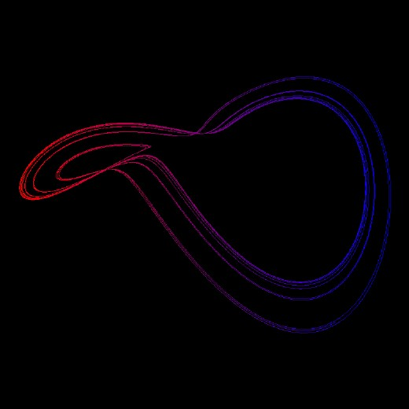
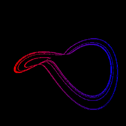

#shimizumorioka

Shimizu–Morioka Attractor — Shimizu and Morioka's 1980 system, a relative of Lorenz's in which the butterfly's wings meet in a lip, a fold where the orbit hesitates before choosing a side.
dx/dt = y dy/dt = x − λy − xz dz/dt = −αz + x²Open Shimizu-Morioka in chaosrack →
It opens running, on the model selector, with its own knobs. Rotate it by dragging, zoom with the wheel, and turn the parameters to see what the figure does when the system changes.